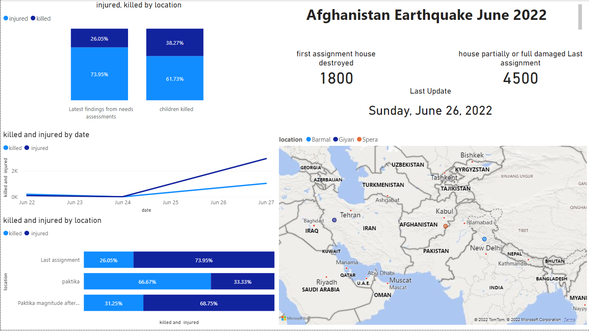

A Data Analyst by a global IT and business consulting services firm that is known for their expertise in IT solutions and their team of highly experienced IT consultants. In order to keep pace with changing technologies and remain competitive, the organization regularly analyzes data to help identify future skill requirements. As a Data Analyst, will be assisting with this initiative and have been tasked with collecting data from various sources and identifying trends for this year's report on emerging skills. first task is to collect the top programming skills that are most in demand from various sources including: Job postings, Training portals and Surveys.
Once collected enough data, will begin analyzing the data and identify insights and trends that may include the following: What are the top programming languages in demand? What are the top database skills in demand? What are the popular IDEs?
will begin by scraping internet web sites and accessing APIs to collect data in various formats like .csv files, excel sheets, and databases. Once this is completed, will make that data ready for analysis using data wrangling techniques. When the data is ready then apply statistical techniques to analyze the data. Then bring all of the information together by using IBM Cognos Analytics to create the dashboard. And finally, show off storytelling skills by sharing findings in a presentation.
.

Story:
The attached dash board shows the locations most affected by the earthquake that may hit the regions of Afghanistan from relifeweb & WSGS, the number of people affected and the number of dead due to earthquakes and aftershocks
Characteristics
Initially reported by the USGS as a magnitude 6.1 event at a depth of 51 km (32 mi), it was later revised to 5.9 (Mwb ) at a depth of 10 km (6.2 mi).[22][5] It released an energy yield equivalent to 475,000 tons of TNT, 37 times more powerful that the atomic bomb dropped over Hiroshima.[23] The European-Mediterranean Seismological Centre (EMSC) reported the magnitude as 5.9 Mw .[24] Meanwhile, the Global Centroid Moment Tensor recorded the event as 6.2 Mw at 15.1 km (9.4 mi) depth.[1] India's National Centre for Seismology recorded the event as M 6.1 at 10 km (6.2 mi) depth.[25]
The earthquake was the result of shallow strike-slip faulting. According to the USGS, it occurred along either a northeast-striking left-lateral fault or northwest-striking right-lateral fault.[5] The GEOSCOPE Observatory reported the earthquake at a magnitude of 6.2 Mw at a depth of 6 km (3.7 mi),[26] and proposed two fault solutions. The first was a south-southwest–north-northeast striking, 70° west–northwest dipping left-lateral fault. A second solution is on a west-northwest–east-southeast trending, near-vertical, right-lateral fault.[26] A magnitude 4.5 aftershock occurred 6 km (3.7 mi) south of the mainshock epicenter, one minute later.[27] On 24 June, another aftershock measuring mb 4.3 was recorded.[28]
Preliminary InSAR observations by Sentinel-1 suggest the earthquake produced up to 40 cm (16 in) of line-of-sight displacement along the eastern side of the north-northeast–south-southwest trending North Waziristan-Bannu thrust fault zone, south of the epicenter. An analysis of data by Sentinel-2 also found landslides immediately around, and south of the epicenter.[29] A collaboration between the IREA CNR and the National Institute of Geophysics and Volcanology indicate the earthquake produced coseismic slip greater than 1.5 m (4 ft 11 in) at depth along a fault with a strike of 212°, dip of 56°, and rake of 36°. It had a focal mechanism corresponding to oblique-reverse faulting.[30] A finite fault model by the USGS indicate the earthquake produced up to 1.6 m (5 ft 3 in) of coseismic slip at between 2.5 km (1.6 mi) and 5.0 km (3.1 mi) beneath the surface. Most of the rupture was confined to a 10 km (6.2 mi) × 7.5 km (4.7 mi) area along the fault.[5]
Intensity
According to the USGS, a maximum Modified Mercalli intensity of IX (Violent) was estimated.[5] According to the USGS' PAGER service, up to 18,000 people were exposed to shaking of at least IX.[31] Approximately 75,000 people were within the zone of intensity VIII, and 148,000 people were exposed to VII shaking.[31] Severe shaking was felt in Paktika's Gayan District, and light shaking was felt in the Afghan capital Kabul and Pakistani cities such as Peshawar, Islamabad and Lahore.[32][5] The earthquake was also felt in parts of Iran and India.{en.wikipedia.org}
.